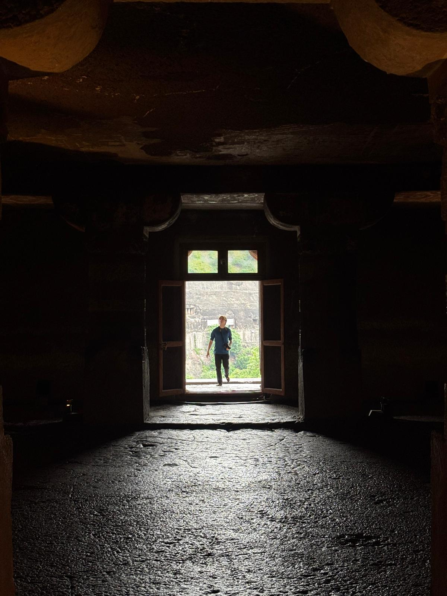

<div class="textcontainer">
<h3>About Me</h3>
<p class="margin"> </p>
<div class="center-row">
<style>
p.solid {border-style: solid;}
img {
border: 3px solid #000;
}
</style>
<p id="aboutme">
Hello everyone! My name is John Weaver. I'm a senior in Kirkland House pursuing a joint concentration in History of Art and Architecture and South Asian Studies with a secondary in English. My research focuses on the creation and imagination of sacred spaces in premodern South and Southeast Asia through mediums such as architecture, sculpture, and even textiles. In the past, I've designed a digital exhibition comparing the kalamkari textiles of Andhra Pradhesh to nearby temples for the American Institute of Indian Studies. Currently I am working on my senior thesis which focuses on cave temples in the Deccan region of India.
</p>
</div>
<br></br>
Outside of class I enjoy reading, bird watching, and brewing coffee with my pour-over. I also love video and board games. My favorite book is "Ulysses" by James Joyce and my favorite bird is a tie between the American Crow and the Baya Weaver.
<br></br>

<br></br>
<br></br>
</div>